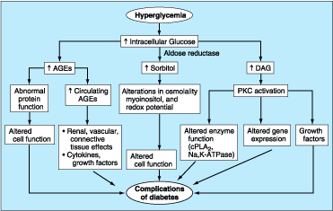

[Note: just because we have not yet precisely defined the terms, I looked these up in Stedman. Etiology is generally the “cause”, or more specifically the underlying or initial workings that cause a behavior or disease. Pathophysiology is specifically what goes wrong in a disease. Note also that I have constrained this document to what causes long-term complications, not what causes diabetes itself. This should have been addresses in objective 2.]
Major complications of diabetes mellitus include diabetic ketoacidosis, nonketotic hyperglycemic-hyperosmolic coma (or, less severly, hyperglycemic hyperosmolic nonketotic syndrome or nonketotic hyperosmolar state—here all three of these will be referred to as HHNS), retinopathy, nephropathy, atherosclerotic coronary and peripheral artery disease, and peripheral and autonomic neuropathy. Most of these conditions have a similar frequency of incidence in Type I and Type II diabetes; the exceptions are DKA, which is found only rarely in patients with Type II diabetes, and HHNS, which is seen only in Type II patients.
DKA and HHNS are really considered short-term complications, as they may occur in a diabetic patient not responding to treatment (or not being treated) over a matter of hours to weeks. Diabetic ketoacidosis is accompanied by high serum glucose (usually 300-600 mg/dL), and very high serum ketone levels; HHNS presents as very high serum glucose (600-1200 mg/dL), with approximately normal ketones. (There are other chemical differences in presentation of these two conditions.)
DKA is the result of an insulin deficiency combined with an excess of glucagon. This is causes increased gluconeogenesis, glycogenolysis, and ketone body formation in the liver, and promotes the release of fatty acids and amino acids from fat and muscle toward the liver. Hyperglycemia and insulin deficiency reduce the level of fructose-2,6-phosphate, which in turn changes the activity of phosphofructokinase and fructose-1,6-bisphosphatase. Glucagon decreases the activity of pyruvate kinase, and insulin deficiency increases the activity of phosphoenolpyruvate carboxykinase. All these changes in the liver together promote the gluconeogenesis pathway for pyruvate over the glycolytic pathway, and therefore promotes a cycle of ever higher serum glucose.
Ketoacidosis is brought about by the delivery of fatty acids to the liver, which form ketone bodies there. The excess glucagon activates the enzyme carnitine palmitoyltransferase I, which forms ketoacids instead of triglycerides and very low density lipoproteins. The ketoacids and resulting lactic acid depletes body stores of bicarbonate, and leads to metabolic acidosis.
HHNS is most often seen in the elderly, and only in patients with Type II diabetes. As discussed with DKA, insulin deficiency increases liver glucose production and impairs utilization. (It is unknown why ketones do not seem to increase as in DKA.) The resulting hyperglycemia causes hyperosmolality, resulting in intravascular volume depletion—therefore, HHNS is exacerbated by failure to take in excess fluid, and is often seen in those who are already ill and dehydrated. [Note: maybe I am reading this wrong, but I would think intravascular would refer mainly to extracellular fluid, which should increase in the case of hyperosmolality. Any thoughts?]
Late complications occur after several years of poorly-controlled hyperglycemia. Not all cells have insulin-mediated glucose uptake (mainly muscle cells do), so all other cells have high levels of intracellular glucose anytime the body is hyperglycemic. This high level of glucose often leads to glycosylation and other activations of certain metabolic pathways, leading to further complications. Although not entirely understood, some possible pathways for this pathophysiology is shown in Figure 1. 
Not all complications necessarily have the same pathophysiology.
Vascular disease remains common in those with diabetes; high levels of glucose and/or insulin may lead to atherosclerosis, causing coronary artery disease, limping (claudication), skin breakdown, and infection. Amputation of lower limbs is not uncommon.
About 85% of all diabetics eventually develop some degree of retinopathy (degenerative disease of the retina), which usually does not itself cause vision changes, but can progress to retinal detachment or hemorrhage, which may cause blindness. (These generally seem to be caused by high blood pressure that accompanies DM.)
Nephropathy and end-stage renal disease are also caused by hyperglycemia and hypertension; treating the hypertension seems to help most.
Neuropathy may manifest itself in several ways; polyneuropathy is pain and/or lack of sensation in several nerves; mononeuropathy is the same in a single spinal nerve. Autonomic neuropathy is also seen, but as we have not yet studied the autonomic nervous system, it is only mentioned here in passing. Sensory loss is especially troubling, as diabetics are more prone to infection (perhaps due to less effective blood flow), so minor trauma can become serious. Similarly, it is usually unnoticed when a change in weight distribution is necessary, causing diabetic ulcers to often appear on the feet even of active patients.